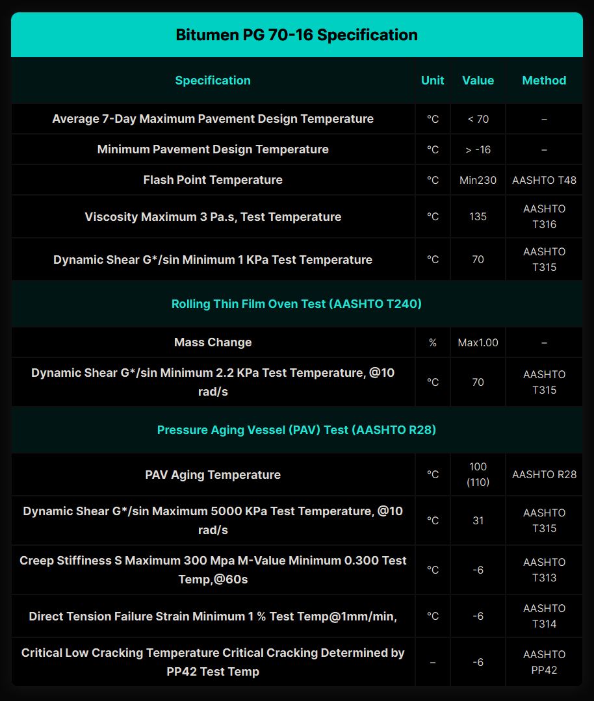

Bitumen PG 70‑16 – General Description │ Iran Bitumen Supply Int │ IBSI
Bitumen PG 70‑16 is a high‑performance Superpave asphalt binder designed for regions that experience hot summer temperatures along with moderately cold winters. Engineered according to Superpave performance grading standards, PG 70‑16 provides long‑term pavement durability by offering strong resistance to rutting at high pavement temperatures reaching 70°C, while maintaining enough flexibility to withstand low‑temperature cracking down to –16°C. This binder is formulated for demanding pavement projects where both traffic‑induced stress and seasonal temperature variations significantly influence performance. Its superior thermal stability ensures that the pavement remains resistant to deformation during hot weather, while its improved low‑temperature flexibility helps prevent cracking during colder periods. These characteristics make PG 70‑16 an excellent choice for expressways, major arterial routes, and urban road networks located in transitional climate zones. Produced to meet and exceed AASHTO M320 specifications, PG 70‑16 delivers consistent binder quality and reliable performance across all production batches. It performs exceptionally well under continuous vehicular loading, maintaining pavement integrity with minimal surface distress over extended service life. This consistency makes it a dependable binder for infrastructure projects that require long‑lasting durability and reduced maintenance needs.
Key Specifications of PG 70‑16
PG 70‑16 is classified as a Superpave Performance Grade asphalt binder with a high‑temperature grade of 70°C and a low‑temperature grade of –16°C. Its compliance with AASHTO M320 ensures that the binder meets strict performance criteria related to stiffness, elasticity, and resistance to both thermal and mechanical stresses. This grading reflects its ability to perform reliably under a wide range of climatic and loading conditions.
Main Applications of PG 70‑16
PG 70‑16 is widely used in high‑traffic expressways and highways where sustained loading and elevated temperatures can quickly deteriorate conventional binders. It is equally effective on urban roads and intersections, where stop‑and‑go traffic places additional stress on the pavement surface. Industrial and commercial access roads also benefit from its ability to withstand repeated heavy loading while maintaining flexibility during seasonal temperature shifts. Its balanced performance makes it suitable for any pavement structure that must endure both intense heat and moderate winter conditions.
Key Benefits of PG 70‑16
One of the primary advantages of PG 70‑16 is its enhanced thermal flexibility, which reduces the likelihood of thermal cracking while maintaining high stiffness at elevated temperatures. Its strong resistance to rutting and shoving helps preserve pavement shape and surface quality even under heavy traffic and hot climates. The binder’s durability minimizes the need for frequent resurfacing and repairs, lowering long‑term maintenance costs. Because PG 70‑16 is manufactured to precise performance standards, it offers consistent and reliable results in demanding environments, ensuring that pavements remain stable, smooth, and long‑lasting.

Specification of Bitumen PG 70-16